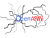
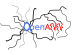

|  |
OpenANN
1.1.0
An open source library for artificial neural networks.
|


All Classes Namespaces Files Functions Variables Typedefs Enumerations Enumerator Friends Macros Pages
|  |
OpenANN
1.1.0
An open source library for artificial neural networks.
|
This is a reinforcement learning problem that has large dimensional state and action space.
Both are continuous, thus, we apply neuroevolution to solve this problem.
The octopus arm environment is available at http://www.cs.mcgill.ca/~dprecup/workshops/ICML06/octopus.html. You have to unpack the archive octopus-code-distribution.zip to the working directory.
In this case, we only use the default environment settings. These are very easy to learn. You see it in this picture:
The octopus consists of 12 distinct compartments. It can move 36 muscles and the state space has 106 components. The agent has to move the orange pieces of food into the black mouth. We use an MLP with 106-10-36 topology and bias. The action's components have to be in [0, 1]. Therefore, the activation function of the output layer is logistic sigmoid. In the hidden layer it is tangens hyperbolicus. In this benchmark we compare several compression configurations. The weights of a neuron in the first layer are represented by varying numbers of parameters (5-107) and the weights of a neuron in the second layer are represented by 11 parameters.
To execute the benchmark you can run the Python script:
download will download the dataset, run will start the benchmark and evaluate will plot the result. You can of course modify the script or do each step manually.
If you run this benchmark on one computer, it takes about 20 days. Thus, it is recommended to start the benchmark on multiple computers. You can modify the variable "runs" in the ruby script "run" and set it to a desired number, start the script on separate computers, merge the results in a single directory "logs" and run the script. Each run will take approximately two days. If you set the number of runs to 2 and run the script on 5 computers, it will take about 4 days to finish.
 1.8.3.1
1.8.3.1